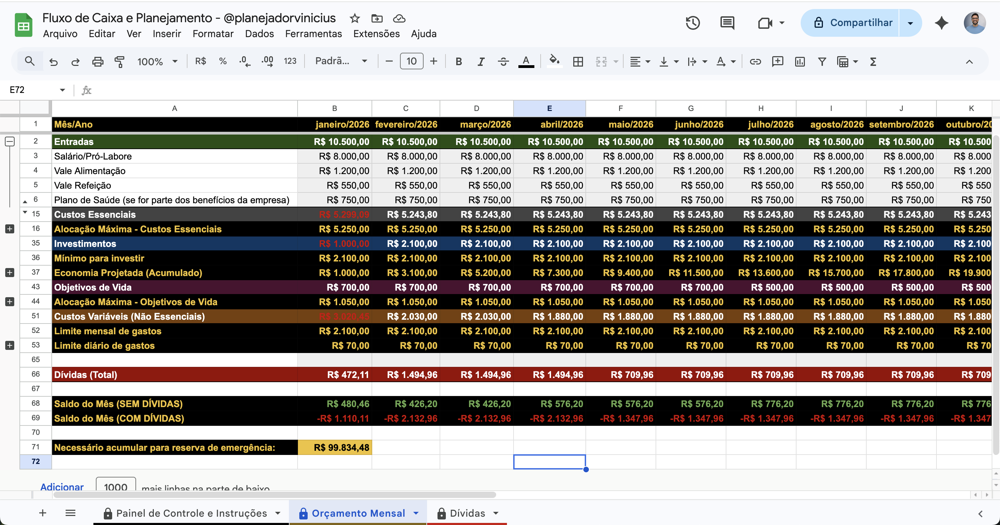

Para quem ganha bem e quer parar de deixar dinheiro na mesa. Como transformar renda alta em patrimônio que cresce de forma consistente.
Este guia é para uso pessoal. Reprodução parcial ou total não autorizada.
© 2026 Vinícius Gomes Lima
Você trabalha muito, ganha bem. E ainda assim, quando para pra olhar o patrimônio acumulado, o número não reflete o esforço dos últimos anos.
O dinheiro entra, o padrão de vida sobe junto e sobra menos do que deveria para alguém com a sua renda. Você não está endividado. Mas também não está acumulando no ritmo que poderia. Esse é o paradoxo de quem ganha bem sem estratégia, e ele é muito mais comum do que parece.
Este guia foi escrito para mudar isso. Não vai te pedir para cortar gastos de forma agressiva nem para abrir mão do padrão de vida que você construiu. Vai te mostrar como usar a renda que você já tem de forma mais inteligente, estruturar os pilares certos na ordem certa e tomar decisões que fazem sentido para a sua fase de vida.
Meu nome é Vinícius Gomes Lima. Sou formado em Relações Internacionais pela UFRJ, tenho MBA em Administração, Finanças e Geração de Valor pela PUC-RS e sou Planejador Financeiro Certificado. Ao longo de mais de 16 anos no mercado corporativo, atuei em multinacionais nos setores de qualidade, atendimento ao cliente e tecnologia, estando grande parte desse tempo à frente de operações internacionais e liderança de times globais.
Este guia foi escrito para profissionais que ganham bem e querem parar de improvisar. O problema que vejo com mais frequência não é falta de renda. É falta de estrutura.
Existe uma ilusão muito comum entre quem ganha bem: a de que, chegando em determinado nível de renda, as coisas se resolvem sozinhas. Que o patrimônio vai acumular naturalmente. Que a aposentadoria vai estar garantida. Que sobrar dinheiro no final do mês vai ser consequência automática de ganhar mais. Na prática, quase nunca é assim.
Fontes: Serasa Consumidor (2024), Sebrae (2023), FGV IBRE (2023)
Quando a renda sobe, o padrão de vida tende a subir na mesma proporção ou mais. Troca de carro, apartamento maior, escola mais cara para os filhos, viagens mais frequentes. Cada um desses movimentos é, em si, completamente razoável. O problema é quando todos acontecem ao mesmo tempo, sem planejamento, e o espaço para guardar e investir continua o mesmo de antes.
Esse fenômeno tem um nome nas finanças: inflação de estilo de vida. Ele explica por que médicos, advogados e empresários com renda mensal de R$20.000 ou mais, chegam aos 50 anos sem patrimônio suficiente para manter o padrão atual na aposentadoria.
Um advogado de 42 anos com renda mensal de R$25.000. Ao longo dos últimos 10 anos, trocou de carro três vezes, financiou um apartamento de R$900.000, matriculou os dois filhos em escola particular e viajou para o exterior todo ano.
Hoje, com toda essa renda acumulada ao longo de uma década, o patrimônio líquido é de R$180.000 em investimentos e um apartamento ainda com R$600.000 de saldo devedor. Cada decisão isolada pareceu razoável na época. O problema foi tomar todas ao mesmo tempo, sem planejamento, deixando o espaço para investir sempre em segundo plano.
Quem constrói patrimônio de verdade não é necessariamente quem ganha mais. É quem tem uma diferença consistente entre o que entra e o que sai, e direciona essa diferença com inteligência ao longo do tempo.
O patrimônio não é o que você ganha. É a diferença entre o que você ganha e o que você gasta, multiplicada pelo tempo.
Para muitos profissionais de alta renda, o padrão de vida é parte da identidade profissional. O carro, o escritório, as viagens e os restaurantes fazem parte da imagem que se projeta no mercado e nos relacionamentos. Abrir mão de qualquer um desses itens parece uma ameaça, não uma escolha financeira.
Este guia não vai te pedir para cortar tudo. Mas vai te ajudar a separar o que realmente importa para você do que é apenas manutenção de aparência, e a tomar decisões conscientes sobre onde o seu dinheiro vai.
Antes de montar qualquer estratégia, você precisa saber o que está acontecendo de verdade com o seu dinheiro.
Isso significa ir além do extrato bancário e entender a estrutura de custo da sua vida atual. Para quem tem renda alta, o diagnóstico precisa ir além das categorias básicas de gastos e considerar camadas que raramente aparecem em guias financeiros convencionais: custos de status embutidos no padrão de vida, comprometimentos de longo prazo em financiamentos e planos, e a proporção real entre o que entra e o que fica.
Profissionais de alta renda costumam ter uma estrutura de custos fixos muito maior do que percebem. Alguns itens que passam despercebidos no dia a dia, mas pesam no orçamento:
Para cada custo fixo da sua lista, pergunte: se a minha renda caísse 30% amanhã, eu conseguiria manter esse custo por pelo menos 12 meses? Se a resposta for não para muitos itens, sua estrutura de vida está superexposta.
Antes de qualquer estratégia de investimento, você precisa saber para onde está indo. Quais são os seus objetivos financeiros reais, com prazo e valor definidos?
Objetivos sem número e sem prazo são desejos. Com número e prazo, viram metas que podem ser colocadas num plano.
A Planilha de Planejamento permite registrar cada objetivo com valor e prazo, calcular quanto guardar por mês para atingi-los e acompanhar o progresso mês a mês ao longo de 24 meses. Disponível em planejadorvinicius.com.br.

Patrimônio consistente não se constrói com um único movimento certeiro. Ele se constrói colocando as peças certas no lugar, na ordem certa, e mantendo a estrutura de pé ao longo do tempo.
Patrimônio é o resultado de decisões boas tomadas repetidamente ao longo de anos.
O ponto de partida. Sem reserva, qualquer imprevisto derruba a estrutura toda. Para quem ganha bem, a reserva precisa ser maior e estar em lugares mais adequados do que a poupança.
Seguros de vida, invalidez e saúde. Quem tem dependentes e patrimônio a proteger não pode ignorar esse pilar. Um evento de saúde sem cobertura adequada pode liquidar anos de acumulação.
Planejamento de longo prazo com benefício fiscal real para quem tem renda alta. Usado de forma estratégica, reduz o imposto de renda e financia a aposentadoria.
A parte que mais cresce no longo prazo. Renda fixa para estabilidade, renda variável para crescimento. A proporção certa depende do seu perfil e dos seus objetivos.
Imóveis, carros e outros bens de valor. A decisão de comprar, financiar ou alugar tem impacto direto no fluxo de caixa e na composição do patrimônio.
O que acontece com o seu patrimônio se você não estiver mais aqui? Sem estrutura sucessória, o inventário pode consumir até 20% do patrimônio acumulado em custos e impostos.
Um erro comum é querer investir antes de ter proteção e reserva, ou planejar a sucessão sem ter patrimônio consolidado. A sequência lógica é: reserva e proteção primeiro, depois previdência, depois investimentos e, por fim, a sucessão.
Isso não significa fazer um de cada vez. Significa dar peso adequado a cada pilar de acordo com a sua fase atual.
Os dois pilares que a maioria dos profissionais de alta renda negligencia. A reserva parece desnecessária para quem ganha bem. O seguro parece um custo sem retorno. Os dois raciocínios são armadilhas.
Para quem tem alta renda, a reserva precisa ser calculada sobre os custos fixos reais, que costumam ser altos. Uma família com custos fixos de R$15.000 por mês precisa de pelo menos R$90.000 a R$180.000 disponíveis a qualquer momento.
Assalariado de alta renda com emprego estável. Calculado sobre os custos fixos mensais totais da família.
Profissional liberal, empresário ou autônomo. Renda variável exige reserva maior. Inclua também um colchão para capital de giro se tiver negócio.
A reserva precisa de liquidez imediata, mas isso não significa que precisa render pouco. Para valores maiores, existem opções mais adequadas:
Para quem tem dependentes, patrimônio acumulado e uma renda que sustenta uma estrutura de vida complexa, a proteção por seguros não é opcional. É parte da estrutura financeira.
Uma referência razoável é destinar entre 2% e 5% da renda bruta anual ao conjunto de seguros. Valores muito abaixo disso costumam indicar coberturas insuficientes.
A Planilha de Planejamento calcula automaticamente o tamanho da sua reserva de emergência com base nos custos fixos reais e mostra o progresso mês a mês até você atingir a meta. Disponível em planejadorvinicius.com.br.
Investir não é sobre escolher o produto certo. É sobre montar uma carteira que equilibra crescimento, segurança e liquidez de acordo com os seus objetivos e o seu perfil de tolerância a risco.
Antes de escolher qualquer produto, separe os seus recursos por objetivo e prazo. Dinheiro com objetivos diferentes exige tratamentos diferentes:
Para quem tem renda alta, a renda fixa vai muito além do Tesouro Selic. Existem produtos com rentabilidade superior e benefícios fiscais importantes:
Suponha CDI em 10,5% ao ano. Um CDB a 110% do CDI rende 11,55% ao ano bruto. Com IR de 15% (prazo de 2 anos), o retorno líquido é 9,82% ao ano.
Uma LCA a 95% do CDI rende 9,97% ao ano já líquido, sem IR. O CDB paga mais no bruto, mas a LCA entrega mais no bolso. Abaixo de 93,5% do CDI, a LCA perderia para esse CDB no líquido. Sempre compare o retorno líquido antes de decidir.
Renda variável faz sentido quando você já tem reserva consolidada, proteção estruturada e um horizonte de tempo longo para o dinheiro aplicado. Sem esses pré-requisitos, a volatilidade vira um problema real.
A indicação de quais ativos específicos comprar, como qual ação ou qual fundo, é atribuição do assessor de investimentos certificado. O planejador financeiro define a estratégia e a alocação por objetivo e perfil. Os dois papéis se complementam.
Previdência privada é um dos instrumentos mais mal compreendidos no mercado financeiro. Para quem tem renda alta, quando usada de forma estratégica, ela é uma das ferramentas mais eficientes de planejamento de longo prazo disponíveis.
Permite deduzir até 12% da renda bruta anual na declaração completa do IR. Indicado para quem declara pelo modelo completo. O imposto é cobrado no resgate sobre o valor total acumulado.
Não tem dedução de IR. Indicado para quem declara pelo simplificado ou já atingiu o limite de dedução com o PGBL. O imposto no resgate incide apenas sobre os rendimentos.
Para um profissional que declara IR pelo modelo completo e tem renda tributável acima de R$10.000 por mês, aportar no PGBL equivale a receber um retorno imediato de até 27,5% sobre o valor investido, que é a alíquota máxima do IR devolvida na declaração. Nenhum outro investimento oferece esse retorno garantido no primeiro ano.
Na previdência privada, você escolhe entre dois regimes de tributação no momento da contratação. Na tabela progressiva, a alíquota segue a mesma faixa do seu IR anual, podendo chegar a 27,5%. É vantajosa apenas se você fizer saques pequenos na aposentadoria, com renda tributável baixa. Na tabela regressiva, quanto mais tempo o dinheiro fica aplicado, menor o imposto no resgate. Para dinheiro de longo prazo, essa é a escolha que faz mais sentido na maior parte dos casos:
| Prazo de acumulação | Alíquota de IR no resgate |
|---|---|
| Até 2 anos | 35% |
| De 2 a 4 anos | 30% |
| De 4 a 6 anos | 25% |
| De 6 a 8 anos | 20% |
| De 8 a 10 anos | 15% |
| Acima de 10 anos | 10% |
Se você tem 38 anos e pretende resgatar aos 65, o dinheiro ficará aplicado por 27 anos. Você já estará na alíquota de 10% após os primeiros 10 anos, e todo o crescimento posterior será tributado nesse patamar mínimo. Nenhum outro investimento de renda fixa no Brasil oferece essa vantagem fiscal para quem pensa no longo prazo.
A previdência privada não entra no inventário. O valor acumulado vai diretamente aos beneficiários indicados, sem custas de cartório, sem ITCMD em alguns estados e sem o tempo do processo judicial. Para planejamento sucessório, é um instrumento valioso.
Nem todo plano de previdência vale a pena. Os pontos críticos a avaliar:
Imóvel, carro, viagem, reforma, intercâmbio dos filhos. Decisões de aquisição de bens têm impacto direto no fluxo de caixa e na composição do patrimônio. Tomadas sem planejamento, elas travam a capacidade de investir por anos.
A decisão de comprar um imóvel precisa ser avaliada financeiramente, não só emocionalmente. Alguns pontos que fazem diferença:
Isso não significa que comprar imóvel é sempre errado. Significa que a decisão precisa ser tomada com os números na mesa, não apenas com a sensação de segurança que a propriedade transmite.
Carro é um dos ativos que mais consome patrimônio sem que a maioria das pessoas perceba. Depreciação, seguro, IPVA, manutenção, combustível e parcela do financiamento somados chegam facilmente a R$3.000 ou R$6.000 por mês numa família com dois carros financiados.
Viagens e experiências têm valor real na vida. O problema não é gastar com elas. É gastar sem ter planejado, usando crédito ou comprometendo o que deveria ir para investimentos.
Planejamento sucessório é o conjunto de decisões que você toma hoje para definir o que acontece com o seu patrimônio amanhã. É um assunto que a maioria das pessoas adia até ser tarde demais.
Inventário sem planejamento pode consumir de 15% a 20% do patrimônio acumulado em custos, impostos e tempo.
Sem nenhuma estrutura sucessória, o patrimônio passa pelos herdeiros via inventário judicial ou extrajudicial. Esse processo tem custos reais:
Patrimônio de R$2.000.000: um apartamento de R$1.200.000, R$600.000 em investimentos e R$200.000 em outros bens.
Sem planejamento: ITCMD em São Paulo (4%) = R$80.000. Custas de cartório e honorários (3%) = R$60.000. Total consumido: R$140.000, ou 7% do patrimônio, além de até 3 anos sem acesso ao apartamento. Com planejamento adequado, boa parte desses custos pode ser reduzida ou eliminada.
O momento certo para pensar em planejamento sucessório é agora, independente da sua idade. Quanto mais cedo a estrutura for montada, mais tempo ela tem para ser ajustada e mais barato fica. Esse assunto exige um advogado especializado e, idealmente, a visão integrada de um planejador financeiro.
Este guia cobre os fundamentos de uma estratégia patrimonial consistente. Mas há um ponto em que ter um profissional ao lado muda completamente a qualidade das decisões e a velocidade dos resultados.
Para profissionais e famílias com renda e patrimônio acima da média, o planejador financeiro não é um luxo. É alguém que pensa de forma integrada em tudo que afeta o seu patrimônio:
Não existe um patrimônio mínimo para buscar um planejador. Muitas vezes o sinal não é nem falta de conhecimento: a pessoa sabe o que deveria fazer, mas não tem tempo nem atenção disponível para olhar para isso com o cuidado que a situação exige. Profissionais de alta renda chegam ao fim do dia sem energia para cuidar do próprio dinheiro. Faz sentido: o trabalho exige concentração total e é lá que está o maior retorno por hora investida. Você cuida do que te gera renda; o planejador cuida de fazer esse dinheiro trabalhar da forma certa. Além disso, há situações concretas que indicam que a complexidade já ultrapassou o que faz sentido gerenciar sozinho:
A indicação de investimentos específicos, como qual ação ou qual fundo comprar, é atribuição do assessor de investimentos, que tem certificação própria para isso. O planejador financeiro atua na estratégia: quanto guardar, onde alocar de forma geral e como equilibrar risco e objetivo. Os dois papéis se complementam.
Você leu tudo. Agora é hora de sair da teoria e colocar em prática. O patrimônio não começa a crescer no momento em que você aprende a estratégia. Começa no momento em que você age.
Taxa de poupança, comprometimento da renda e patrimônio acumulado em relação à renda anual. Esses três números revelam exatamente onde você está.
Some todos os custos fixos da sua família: escola, imóvel, veículos, planos de saúde, funcionários. O total vai surpreender.
Verifique suas coberturas de seguro de vida, invalidez e saúde. Estão adequadas ao seu patrimônio e aos seus dependentes?
Escolha um objetivo financeiro: aposentadoria, imóvel, independência financeira. Coloque um valor e uma data. Isso muda tudo.
Com os números levantados nos quatro dias anteriores, escreva em uma página: onde você está, onde quer chegar e quais os três movimentos mais importantes para começar. Um plano simples vale mais do que a estratégia perfeita que fica na cabeça.
Uma boa renda abre possibilidades. Um bom plano transforma essas possibilidades em patrimônio real.
O Planejamento Financeiro Estratégico oferece acompanhamento próximo e um plano construído especificamente para a sua realidade, seus objetivos e seu momento de vida. Acesse planejadorvinicius.com.br e agende sua Sessão Estratégica de Diagnóstico.
Os livros abaixo vão aprofundar o que você aprendeu aqui. Cada um foi escolhido pela qualidade do conteúdo e pela aplicabilidade ao contexto brasileiro.
Por que pessoas inteligentes tomam decisões financeiras ruins. Um dos livros mais importantes sobre o tema, com linguagem acessível e exemplos que mudam a forma de pensar.
Guia prático sobre os principais tipos de investimento disponíveis no Brasil. Bom ponto de partida para quem quer entender como funcionam as diferentes classes de ativos.
O clássico sobre investimento em valor. Denso, mas fundamental para quem quer entender a lógica por trás da renda variável de longo prazo.
Apresenta de forma acessível a diferença entre ativos e passivos e por que a forma como pensamos sobre dinheiro define os resultados financeiros.
Foca nos padrões mentais que determinam o comportamento financeiro. Complementa bem o conteúdo sobre comportamento e padrão de vida deste guia.
Essencial para quem toma decisões financeiras em conjunto com o parceiro. Aborda a relação com dinheiro, objetivos compartilhados e planejamento familiar.
Recursos gratuitos para consultar informações, simular investimentos e acompanhar o mercado com fontes confiáveis.
Este guia é atualizado periodicamente. Para informações sobre taxas, leis e produtos financeiros, consulte sempre as fontes oficiais, pois esses dados mudam com frequência.